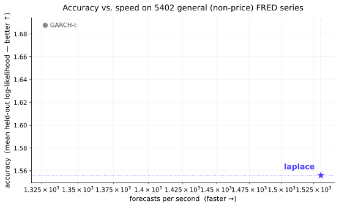

skaters
Simple, fast, automatic, distributional univariate time-series prediction.
One call, zero dependencies, every prediction a full probability
distribution computed online in O(1) — in pure Python and JavaScript alike. A
general-purpose forecaster for non-price economic series: on held-out
likelihood laplace beats AutoARIMA, AutoETS, SARIMAX, conformal, zero-shot
foundation models like Chronos and TimesFM, and GARCH-t — all heavier and slower.
(No free lunch on price/returns: there GARCH-t wins, and you should use it.)

laplace
sits alone in the top-right — best likelihood, fastest — while the classical, neural, and
foundation-model baselines trade accuracy for orders of magnitude more compute.
The benchmarks →laplace
has the highest mean held-out log-likelihood (3.20) and the best win-rate
against AutoARIMA (82%), AutoETS (97%), statsmodels
SARIMAX (87%), conformal, and — the real test — the heavy-tail SOTA
GARCH-t (68% raw / 65% family-weighted; mean LL 3.20 vs 3.03). On CRPS it
loses only to the CRPS-specialists (conformal, GARCH-t). No free lunch on
price/returns — there GARCH-t wins, and we recommend it.
The benchmarks →
laplace beats Chronos, TimesFM,
Moirai, and Lag-Llama used zero-shot, on the continuous series,
on both log-likelihood (97–100%) and CRPS (72–94%) — a
zero-dependency online ensemble holding its own against 200M-parameter transformers.
The foundation study →
pip install skaters. Every prediction is a Dist — a weighted
Gaussian mixture carrying the mean, the spread, quantiles, and a density at once. You build
models by composition: transforms chain, ensembles nest, and a distributional leaf
sits at the bottom (see the Guide).
Quick start
from skaters import laplace
f = laplace(k=3)
state = None
for y in observations:
dists, state = f(y, state)
dists[0].mean # point forecast
dists[0].std # uncertainty
dists[0].quantile(0.975) # 95th percentile
dists[0].logpdf(y) # log-likelihood
dists[0].cdf(y) # CDF at y
Every skater returns list[Dist] — one weighted mixture per horizon
$h = 1, \ldots, k$. Point forecasts, uncertainty, density evaluation, and quantiles are all
facets of the same object.
One general forecaster
skaters exposes exactly one forecaster, laplace.
At multi-step horizons (k>1) it is multi-scale by default,
mixing instances on decimated clocks by likelihood (opt out with scales=[1]).
Everything else is a building block you can compose. ("skater" is the concept — any
(y, state) → ([Dist], state) function — not a function name.)
from skaters import laplace
f = laplace(k=1)
A likelihood-weighted ensemble over the full candidate pool — model first, conform
last, with the lattice projection on by default, and an Ornstein–Uhlenbeck mean-reversion
group in the multi-step (k>1) pool. Specialist behaviour (mean reversion,
GARCH-style volatility) is reachable by composition (ou_transform,
garch_leaf) when you have a strong prior. For price/return series there's
no free lunch — use GARCH-t.
Guide →
The Dist object, transforms, conjugation, and ensembles — how it all composes.
Papers & benchmarks →
The paper, and the studies vs ARIMA/ETS/GARCH/conformal and the foundation models.
Live demos →
Watch a policy forecast live, with its uncertainty band, on data you choose.
Robustness explorer →
Slice the non-price benchmark any way you like — random, by category, keyword,
seasonality, tails — and watch laplace's win-rate hold, live.
Heritage
skaters is a from-scratch rewrite that distils ideas from
timemachines, the
competition-winning forecasting package by Peter Cotton, and builds on years of experience
running live distributional prediction contests at
microprediction — where forecasts are scored,
continuously, as full distributions rather than points. Sibling packages: precise (online covariance) and
humpday (global optimizers).
Get the source
github.com/microprediction/skaters
·
pip install skaters
·
Examples